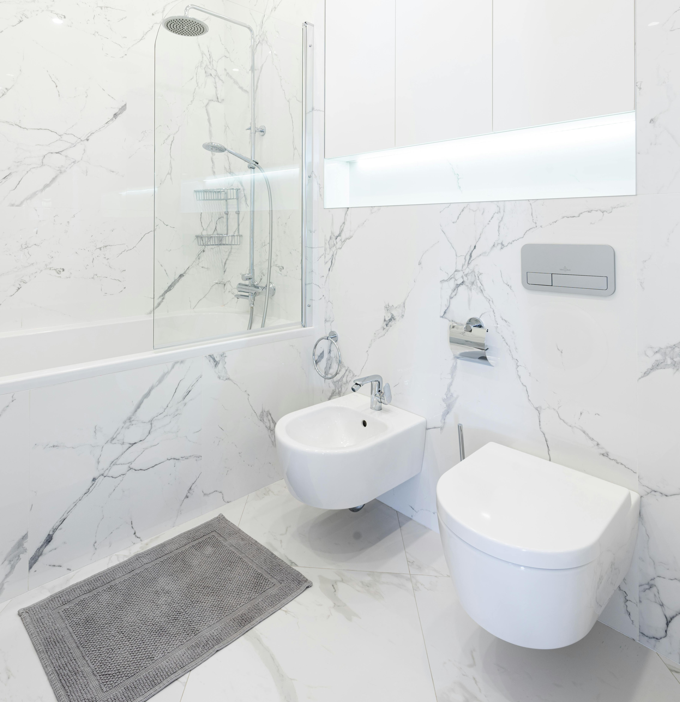
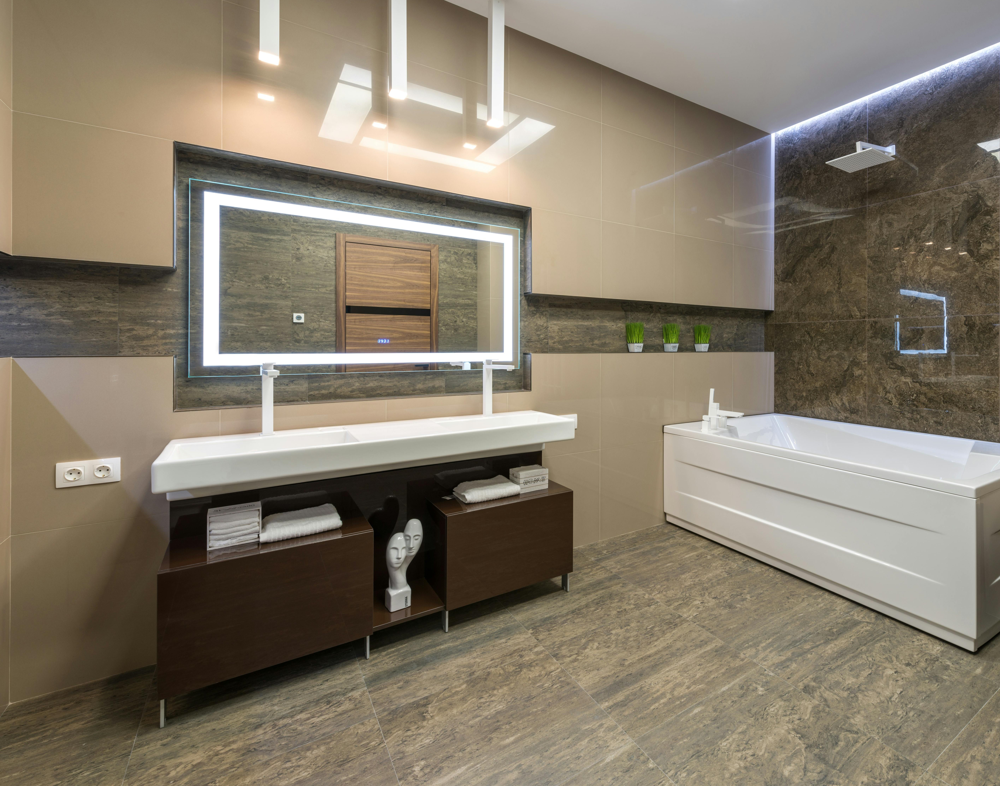
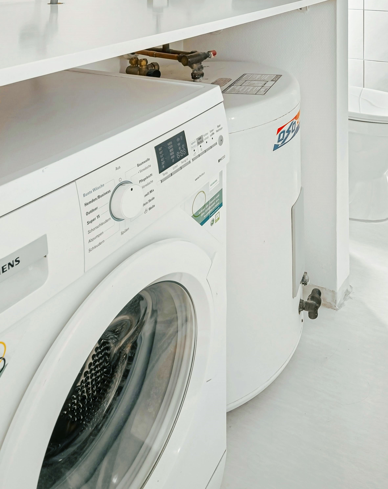

Sanitärarbeiten
Saubere Montage, sichere Anschlüsse und zuverlässige Abdichtung
Sanitärarbeiten im Bad und in der Küche
Wir erneuern Sanitärbereiche sauber und sorgfältig: Austausch von Sanitäranlagen, Anschluss von Geräten sowie fachgerechte Abdichtung aller Anschlüsse.
Während der Arbeiten schützen wir Böden und Möbel und hinterlassen den Arbeitsbereich ordentlich und sauber.
- Sorgfältige Arbeitsweise
- Schutz von Oberflächen und Einrichtung
- Aufräumen nach Abschluss der Arbeiten
Austausch von Armaturen und Anschlüssen
- Mischbatterien für Waschbecken, Badewanne und Küche
- Duscharmaturen und Duschsets
- Kartuschen, Siphons und flexible Anschlussschläuche
- Demontage alter und Montage neuer Armaturen
Alle Verbindungen werden fachgerecht montiert und auf Dichtheit geprüft.
WC-Anlagen und Spülkästen
- Montage von Stand- und Wand-WCs (bei vorhandener Vorinstallation)
- Anschluss und Einstellung des Spülkastens
- Montage von WC-Sitzen (inkl. Soft-Close)
- Justierung der Spülmechanik
Die Montage erfolgt präzise und stabil für einen sicheren und langlebigen Betrieb.

Waschbecken und Badmöbel
- Aufhängung von Waschbecken und Waschtischunterschränken
- Anschluss von Siphon und Überlauf
- Fachgerechte Abdichtung aller Übergänge
Saubere Silikonfugen sorgen für Schutz vor Feuchtigkeit und ein gepflegtes Erscheinungsbild.

Anschluss von Haushaltsgeräten
- Waschmaschinenanschluss (Wasser & Ablauf)
- Geschirrspülmaschinenanschluss
- Funktions- und Dichtigkeitsprüfung
Der Anschluss erfolgt ausschließlich „Plug & Play“ ohne Eingriffe in feste Leitungen.

Duschbereiche und Zubehör
- Duschstangen, Halterungen und Duschsysteme
- Duschwannen und Siphons
- Duschkabinen und Glasabtrennungen (bei vorhandenen Anschlüssen)
- Zubehör: Ablagen, Halter, Relingsysteme
Spiegel mit Beleuchtung werden bei Bedarf im Plug-&-Play-Verfahren angeschlossen.
Vorbereitung und Materialien
Wir beraten Sie bei der Auswahl geeigneter Armaturen und Dichtungen passend zu Wasserdruck und Qualität.
Auf Wunsch übernehmen wir den Einkauf und die Lieferung der benötigten Materialien.
Nach Abschluss der Arbeiten führen wir einen vollständigen Dichtigkeitstest durch.
Was ist im Service enthalten
- Besichtigung und Abstimmung der Arbeiten
- Demontage alter Sanitäranlagen
- Montage, Anschluss und Abdichtung
- Funktions- und Dichtigkeitsprüfung
- Sauberes Verlassen der Baustelle